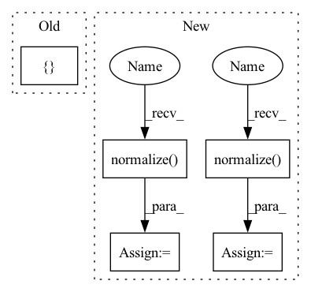

Pattern ID :5019

Before Change
item = self.item_fc_layers(item)
vector = torch.cosine_similarity(user, item).view(-1)
vector = torch.max(vector, torch.tensor([self.min_y_hat]).to(self.device))
return vector
def calculate_loss(self, interaction):
After Change
user = self.user_fc_layers(user)
item = self.item_fc_layers(item)
user = F.normalize(user, p=2, dim=1) // after normalize the vector, cosine distance reduced to dot product.
item = F.normalize(item, p=2, dim=1)
vector = torch.mul(user, item).sum(dim=1)
vector = torch.max(vector, self.min_y_hat) // restrict the result to [0, 1].
return vector
In pattern: SUPERPATTERN
Frequency: 4
Non-data size: 5
Instances
Fragment ID: 17734831
Project Name: rucaibox/recbole
Commit Name: a63051c31f6cacc489710809995b2610a52b96d6
Time: 2020-09-17
Author: 893833413@qq.com
File Name: recbox/model/general_recommender/dmf.py
M Class Name: DMF
N Class Name: DMF
M Method Name: forward(3)
N Method Name: forward(3)
M Parent Class: GeneralRecommender
N Parent Class: GeneralRecommender
M File Name: recbox/model/general_recommender/dmf.py
N File Name: recbox/model/general_recommender/dmf.py
M Start Line: 73
M End Line: 82
N Start Line: 90
N End Line: 106
'>
Before Change
// ------- metrics -------
acc1, acc5 = accuracy_at_k(logits, target, top_k=(1, 5))
metrics = {
"train_nce_loss": nce_loss,
"train_class_loss": class_loss,
"train_acc1": acc1,
"train_acc5": acc5,
}
self.log_dict(metrics, on_epoch=True, sync_dist=True)
return loss
def on_train_batch_end(self, outputs, batch, batch_idx, dataloader_idx):
After Change
with torch.no_grad():
k1 = self.momentum_projector(feats1_momentum)
k2 = self.momentum_projector(feats2_momentum)
k1 = F.normalize(k1)
k2 = F.normalize(k2)
// ------- contrastive loss -------
// symmetric
queue = self.queue.clone().detach()
'>
Fragment ID: 17734826
Project Name: vturrisi/contrastive-learning
Commit Name: a47bb52eeeb836a919c105a9dcd27930c9124ec4
Time: 2021-06-14
Author: vt.turrisi@gmail.com
File Name: solo/methods/mocov2plus.py
M Class Name: MoCoV2Plus
N Class Name: MoCoV2Plus
M Method Name: training_step(3)
N Method Name: training_step(3)
M Parent Class: BaseMomentumModel
N Parent Class: BaseModel
M File Name: solo/methods/mocov2plus.py
N File Name: solo/methods/mocov2plus.py
M Start Line: 107
M End Line: 152
N Start Line: 82
N End Line: 112
'>
Before Change
item = self.item_fc_layers(item)
vector = torch.cosine_similarity(user, item).view(-1)
vector = torch.max(vector, torch.tensor([self.min_y_hat]).to(self.device))
return vector
def calculate_loss(self, interaction):
After Change
user = self.user_fc_layers(user)
item = self.item_fc_layers(item)
user = F.normalize(user, p=2, dim=1) // after normalize the vector, cosine distance reduced to dot product.
item = F.normalize(item, p=2, dim=1)
vector = torch.mul(user, item).sum(dim=1)
vector = torch.max(vector, self.min_y_hat) // restrict the result to [0, 1].
return vector
'>
Fragment ID: 17734823
Project Name: rucaibox/recbole
Commit Name: a63051c31f6cacc489710809995b2610a52b96d6
Time: 2020-09-17
Author: 893833413@qq.com
File Name: recbox/model/general_recommender/dmf.py
M Class Name: DMF
N Class Name: DMF
M Method Name: forward(3)
N Method Name: forward(3)
M Parent Class: GeneralRecommender
N Parent Class: GeneralRecommender
M File Name: recbox/model/general_recommender/dmf.py
N File Name: recbox/model/general_recommender/dmf.py
M Start Line: 73
M End Line: 82
N Start Line: 90
N End Line: 106
'>
Before Change
z2_means = z2.mean(1) // [batch_size, metric_dim]
z2_stds = z2.std(1) // [batch_size, metric_dim]
kl_div_kernel = []
for i, z1_mean in enumerate(z1_means):
for j, z2_mean in enumerate(z2_means):
z1_var = z1_stds[i] ** 2 // [metric_dim]
z2_var = z2_stds[j] ** 2 // [metric_dim]
After Change
z1 = z1.view(batch_size, 2, metric_dim)
z2 = z2.view(-1, batch_size, metric_dim).permute(1, 0, 2) // [batch_size, num_conformers, metric_dim]
if self.norm:
z1 = F.normalize(z1, dim=2)
z2 = F.normalize(z2, dim=2)
z1_means = z1[:, 0, :] // [batch_size, metric_dim]
z1_stds = z1[:, 1, :] // [batch_size, metric_dim]
z2_means = z2.mean(1) // [batch_size, metric_dim]
z2_stds = z2.std(1) // [batch_size, metric_dim]
'>
Fragment ID: 17734839
Project Name: hannesstark/3dinfomax
Commit Name: 857e5afd93cb378afdf4c58e77fadfb4ab729799
Time: 2021-07-08
Author: hannes.staerk@gmail.com
File Name: commons/losses.py
M Class Name: KLDivergenceMultiplePositives
N Class Name: KLDivergenceMultiplePositives
M Method Name: forward(3)
N Method Name: forward(3)
M Parent Class: _Loss
N Parent Class: _Loss
M File Name: commons/losses.py
N File Name: commons/losses.py
M Start Line: 235
M End Line: 257
N Start Line: 232
N End Line: 260
'>
Before Change
authen_output = torch.squeeze(self.linear1(h))
return authen_output
elif self.conditional_strategy in ["ContraGAN", "Proxy_NCA_GAN", "NT_Xent_GAN"]:
authen_output = torch.squeeze(self.linear1(h))
cls_proxy = self.embedding(label)
cls_embed = self.linear2(h)
After Change
if self.d_cond_mtd == "AC":
if self.normalize_d_embed:
for W in self.linear2.parameters():
W = F.normalize(W, dim=1)
h = F.normalize(h, dim=1)
cls_output = self.linear2(h)
elif self.d_cond_mtd == "PD":
adv_output = adv_output + torch.sum(torch.mul(self.embedding(label), h), 1)
elif self.d_cond_mtd == "2C":
'>
Fragment ID: 17734820
Project Name: postech-cvlab/pytorch-studiogan
Commit Name: 03b02d5b20d59e2c0c1f174d21161c9372c4acb5
Time: 2021-09-01
Author: first287@naver.com
File Name: src/models/deep_conv.py
M Class Name: Discriminator
N Class Name: Discriminator
M Method Name: forward(4)
N Method Name: forward(4)
M Parent Class: nn.Module
N Parent Class: nn.Module
M File Name: src/models/deep_conv.py
N File Name: src/models/deep_conv.py
M Start Line: 228
M End Line: 265
N Start Line: 196
N End Line: 225